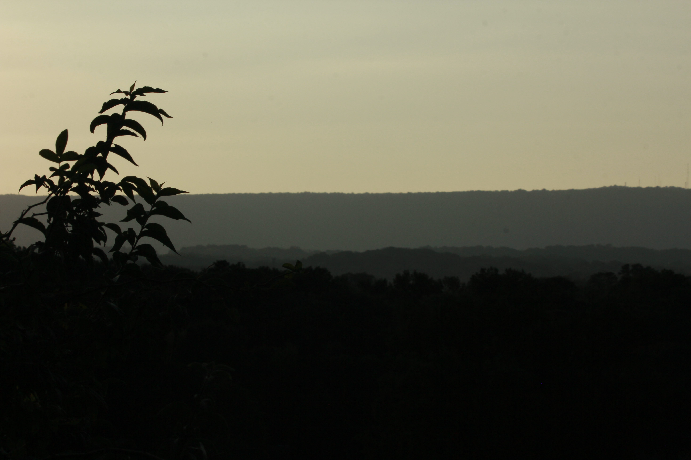

Landscape Photography
Landscape photography captures the everchanging outdoors in a piece of data that doesn't decay. It's important to me to highlight the strange and beautiful scenery our Earth provides us-- therefore, landscape photography is important to me. For anyone curious about how to take landscape photography, there is a National Geographic link below.
Photo taken at Greenway Farms, over the quarry.
This photo was taken in early September at Greenway Farms in Hixson. My environmental biology class took field trips a lot to this particular park for our assignments. I thoroughly enjoyed learning in nature and I'm thankful my professor was adament about us doing so.